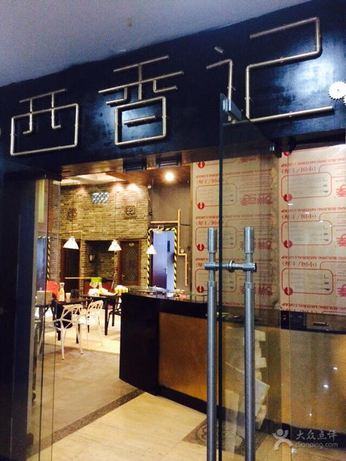

我的创业计划书
--"秦香缘"餐饮企业
一、创业项目介绍
秦香缘是专门从事餐饮制作、服务、配送，承接机关企事业单位、学校食堂管理经营的专业企业。广泛适用于学校、政府及企事业单位、医院等团餐各场景，可以为客户实现从采购、生产、售卖、经营分析等全流程服务管理，助力团餐产业高质量发展。
项目的灵感来源
因为我来自陕西省，喜欢家乡的面食，家乡的菜肴，而学校食堂陕西的面食很少，而且也并不正宗，所以吃面成了一种奢望，很想在学校食堂就能吃到正宗的家乡的面食，所以有了在食堂开一个陕西口味窗口的想法，高中地理老师将过，工厂选址方式之一就是根据厂主个人喜好进行选择，我觉得我的创业项目就属于典型的根据个人喜好而创立的项目。
二、组织结构和人员
1.组织结构
（1）职能结构：实现我们目标所需的各项业务工作主要是烹饪、软件小程序的开发、商业洽谈、打菜盛饭以及顾客意见收集等工作，其中以厨师和窗口的工作占比最高。
（2）层次结构：初期考虑到资金、人力等各方面的问题，采用直线形结构，因为其具有结构简单，责任分明，命令统一的有点，适合企业起步阶段，有利于企业的初步发展。
2.人员
主厨、采购主管、采购员、程序员、窗口打饭员等。
三、项目的创新点
1.技术创新
（1）增加预订服务，同学们可以在窗口填写订单或者关注微信公众号“秦香缘”，提前预订食物。
（2）增加外卖服务，但是是价格亲民的外面，适合学生党。
2.发现创新
首先是我们发现了湘大陕西学子数量相对庞大,而且像我这样对于正宗陕西风味饮食的强烈渴望的占比就更高了，这是对我们来说是一个极大的突破口，创新点。
四、市场调研和竞争分析
（一）市场调研
1.资料显示: 湘大每一届招收的陕西学生相比除湖南省以外的省份算比较多的，占比达到约12%，因此我们的消费群体应该算是比较大；
2.为了了解大家对于在学校食堂吃到家乡菜的渴望程度，我特意在陕西老乡的聚居地“湘大陕西老乡群”里做了调查问卷，并且采访了几位学长学姐，他们都表示很希望食堂能有这么一个正宗陕西菜的窗口；
（二）竞争分析
1.目前最主要的竞争对手应该是食堂的北方面食窗口和校内商业街的陕西风味餐馆，他们在学校经营多年，首先经验肯定比我们要丰富，然后也已经扎稳了根基，有了较为固定的消费人群，因此肯定会产生比较大的阻力；
2.食堂的北方面食窗口占据了较好的地理位置，我们后来，窗口位置自然没有较大的选择余地，势必会有影响。
五、核心竞争力
1.规范化管理
我们拥有专业的规范化管理，每位员工都愿意各司其职，为了我们的目标，共同奔向更加美好的未来！
2.标杆竞争
我的老乡，著名高中校友高博在香港理工大学就读时，很想吃到家乡的美食，创立了品牌“西香记”，而且大获成功。所以我也想试试，因为我相信成功是可以复制的，就萌生了这个想法。

3.人力资源竞争
人力资源的竞争直接关系到企业的核心竞争力，尤其是在21世纪，人才最重要，企业必须重视人才、培养人才、留住人才。“秦香缘”餐饮企业已经为今后大规模的扩展过程好利来制定了一个明确的战略，那就是首先培养人才，主要培养两种人才：主厨和程序员。通过人力资源的竞争，相信“秦香缘”会越办越好，走进更多湖南省的高校，走向全中国。同为陕西风味，我们做的一定是最为正宗的，因为我会选择家乡的厨师，他们一定要会方言，可能会用家乡话来和前来就餐的陕西同学交流，也能让外省同学更好地了解秦风秦味。
六、运营计划
餐饮厨政部:
主厨--2名,要求： 陕西人，陕西方言和普通话均擅长，必须会做陕西菜，最重要的是陕西菜做得正宗且好吃。
采购营销部:
采购主管--1名，主要负责市场调研，要求：具有敏锐的洞察力，能对调查数据进行准确分析，从而给主厨提出建设性的意见。
采购助理--5名，主要负责日常的采购工作，为厨师采购所需的面粉，蔬菜等食材。
技术开发部:
程序员--2名，主要负责相关订餐、外卖小程序、移动APP的开发以及企业官网设计。
广告宣传部:
宣传人员--2名以上，企业起步阶段主要由学生担任，进入快速发展壮大阶段将会裁员，与专业广告企业合作。
七、投资预测，营收预测，利润预测
1.投资预测
对我这样一个学生来说挺高的，但对于一个成功的企业来说，应该不算高。建设初期，我们预计将投入50万，承包学校某一食堂的一个窗口，有起色后，会考虑扩大至一层楼，扩展到全校各个食堂，并且会考虑进入其他高校。
2.营收预测
因为有较大的消费人群，我们至少不会亏本，前期就可以实现少量盈利，后期会更加可观。
3.利润预测
前期需要大量投资，利润偏低，运营稳定后利润会稳步提高，甚至成倍数增长。